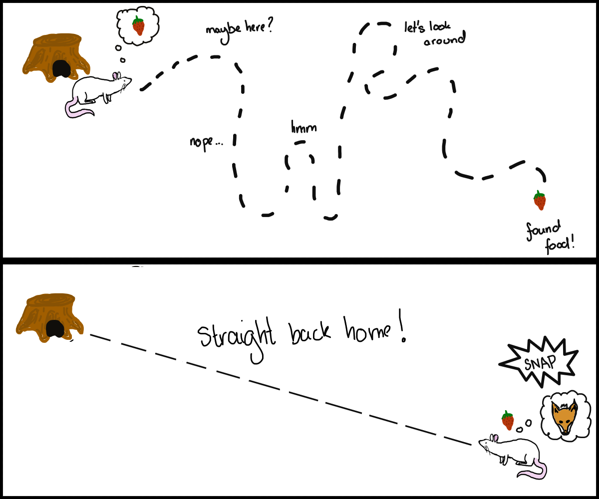
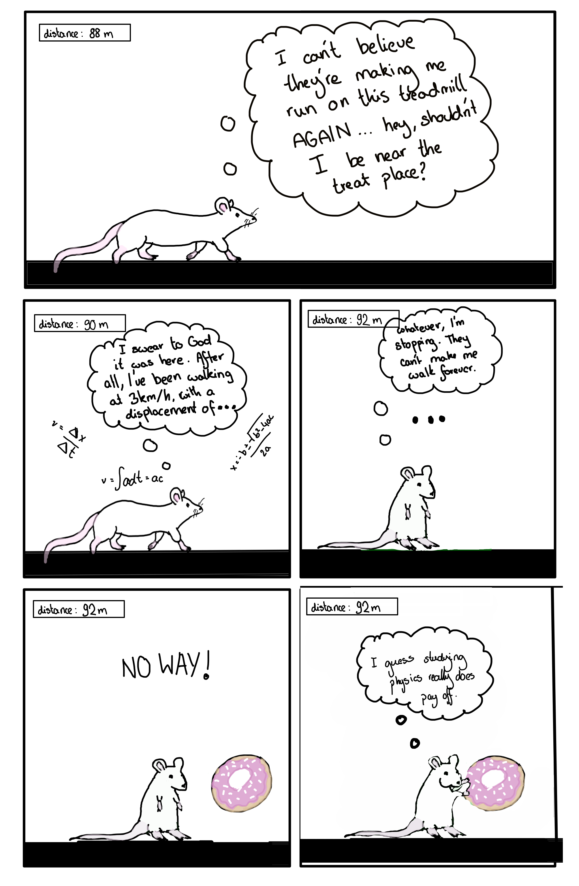
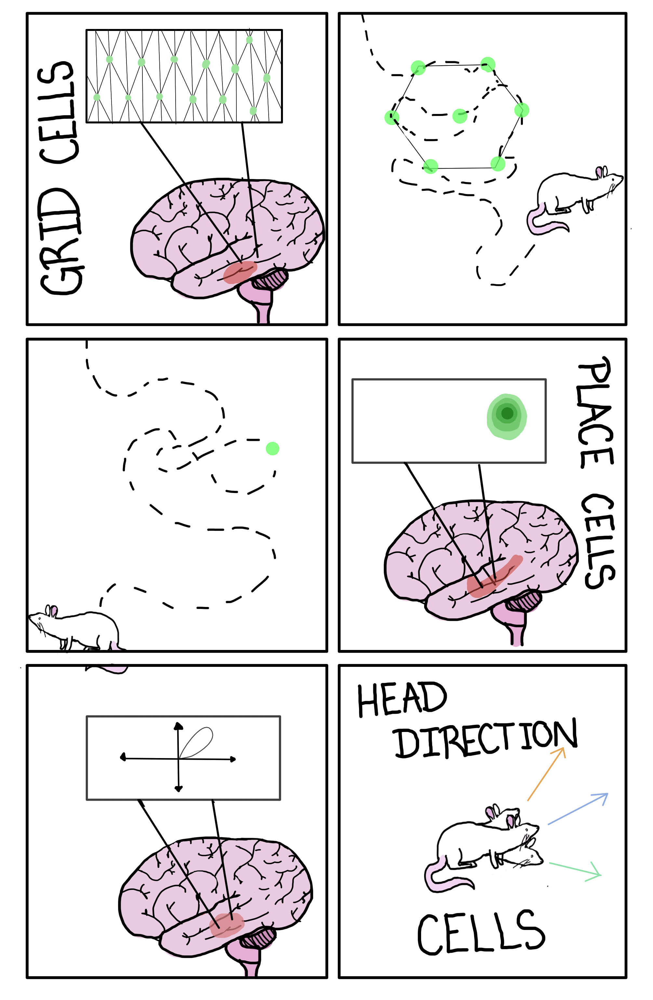

Humans, like all animals, have an innate sense of where we are in the world and where we are
going. We use it everywhere - to walk home, to go to the grocery store, to walk to the bathroom in the middle of
the night.
How we navigate is largely dependent on what information is available to us. Among those is
beaconing, a strategy where we use a distant object to navigate to - say, “Hey, there’s a neon sign here saying
‘Pub’” - that’s probably the entrance to the pub. But what if you don’t have those clues?
Sat you're out on a hike with your friends. You drive up to the base of a formidable
mountain, put on your best smile as your far fitter friend sets off onto the hike that he promised was more of a
"light walk." With a heavy pack and groaning feet, you zigzag across the area from landmark to landmark, until you finally settle down in the campsite for what you hope to be a restful night of sleep.
Tragedy strikes! It's the middle of the night and you're woken up in what an optimist would call a
'puddle', and anyone else might label 'a decidedly sizable body of water'.
So much for the guy on Facebook Marketplace promising that the tent was waterproof.
You start a nighttime hike back to the car. You wish one of you had
brought a headlamp at least - you can't use any landmarks to navigate. Despite that, you somehow manage to make it
back in one piece, going straight from the campsite to the carpark without any of the diversions you had
undertaken on the way there. How did you do> that?
Two types of sensory information are required to update where we think we are: Allothetic
information we get from the outside environment, like that ‘Pub’ sign. Idiothetic information is generated by the
body itself. For example, the brain signals responsible for walking to the pub also provide us with
information about how far we’ve walked so far. Path integration uses these idiothetic cues to transverse the mental
map in our head. For example, a mouse that is foraging and takes a long, winding trajectory towards its goal will
have ‘calculated’ its displacement from its nest and can make a beeline safely back if it suddenly runs into a
fox.

Why do we want to understand the neuroscience of path integration?
Path integration can tell us about mechanisms behind animal biology, primarily homing behaviors in both
vertebrates and invertebrates. In humans, it might lead to a better understanding of how we process and understand
sensory information and the cognitive processes behind it. The algorithms that are elucidated from biological
systems can be applied to mechanical systems, or even used in healthcare to understand ways to improve navigation
aids for patients where navigation has been impaired, such as due to vision loss. Studying path integration is
complicated by the fact that it’s only one part of the mechanism behind navigation. It’s an error-prone system,
and so it works in combination with other information to create a path - for example, a mouse might use remembered
landmarks, olfaction and even way-marking to navigate through an environment. Studying the neurons specifically
involved in path integration therefore requires us to remove all other possibilities but using path integration.
How do we do that?

We can use a virtual reality experiment. Mice run through a
repeated corridor on a virtual reality track until there's a visual cue, such as yellow stripes. If they stop
at the visual cue, they're given a treat. Once the mice have made the association that stopping at that specific
point gets them a treat, the visual cue is removed and the mice are put back on the track. Despite the absence of the cue, the mice keep stopping inthe place where the visual cue would have been. They can't use any allothetic cues - they're constructing their ideas of their displacement purely using path integration mechanisms.
If there were no external cues for the mice to us, how did they know when to stop? One
possibility was that they estimated the time it took for them to run and stopped when they ran the same amount of
time; the researchers tested for this by changing the speed of the treadmill and investigating whether mice that
ran faster would overshoot the reward zone. However, the mice didn't stop at the
wrong place when they ran faster for a shorter period of time. If they weren't measuring the time, how did they know when to stop?
The mice were getting their information from a collection of self-motion cues. This includes
something called proprioception, which is a sense of how your body is positioned, along with the vestibular system
(your inner ear, which provides a sense of balance and awareness of our head and body in space) and motor
efference. Over longer distances, the accuracy of this system drops without external input such as landmarks, as
small errors start to accumulate and the mice start to stop further away from the reward zone.

There are many specialised cell types involved in navigation. For the purpose of this
website, let’s focus on three: place cells, grid cells, and head direction cells.

Grid cells
are place-modulated neurons located primarily in the entorhinal cortex that fire periodically in space, mapping a triangular grid across an environment. As an animal moves through space, grid cells fire to create hexagonal patterns that allow us to map this space. Again, a population of grid cells alone can encode a spatial map
Place cellslocated in the hippocampus, fire when an animal enters a specific location in space. A population of place cells alone can encode a spatial map. .
Head direction cellsare rimarily found in the postsubiculum, and provide directional information by preferentially firing in specific directions. A population of head direction cells can encode which direction you are facing in your spatial map.
These cells potentially have uses outside of encoding physical space - their coding mechanism may be used for more general problem sets, such as cognitive mapping. Cognitive mapping refers to swapping out the three-dimensional world we interact with for a different, continuous dimension that represents an abstract concept. The same way we might encode the map of our room, we might use the hexagonal-firing properties of grid cells to represent, for example, conceptual spaces, such as hierarchically organizing ideas within our brain, or recording temporal sequences of events.